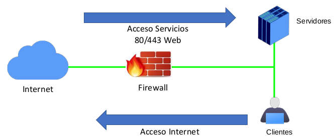
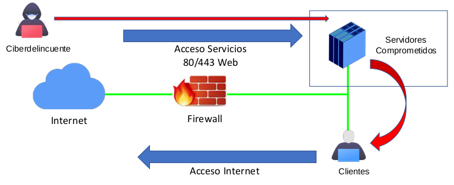
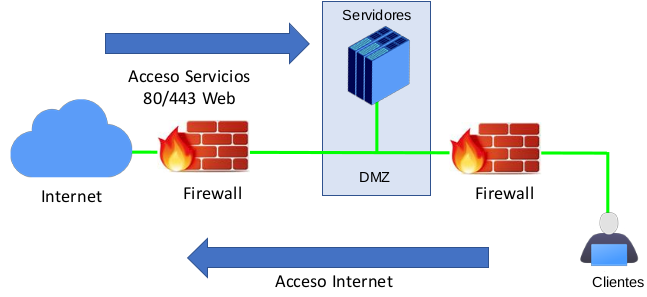
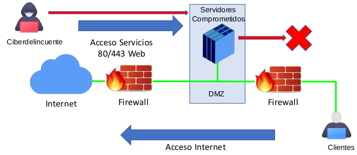
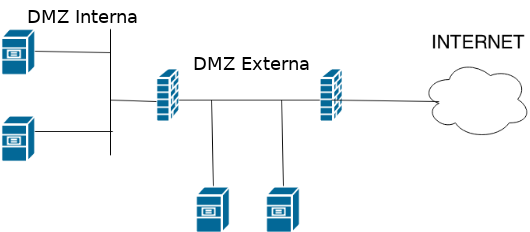

4. Introducción a la DMZ
1. Introducción
El término Zona Desmilitarizada o DMZ se puede definir como una zona de la red que, por estar expuesta al exterior, no se puede considerar segura, por lo que debe tratarse de manera diferente al resto de la infraestructura. Por lo tanto tiene que ver con la seguridad y gestión de acceso a la infraestructura tecnológica.
2. Zona Desmilitarizada - DMZ
Una organización puede necesitar ciertos servicios accesibles desde internet: una página web, un servidor de correo electrónico, servidor de archivos (FTP), servidor de impresión, etcétera.
Cualquier rastreo desde el exterior hacia la IP de entrada en la red, será capaz de detectar que puertos se tienen abiertos, los servicios y posibles vulnerabilidades de estos.
En la Figura 1, se tiene una configuración tradicional de una red con un servidor web que tiene los puertos del firewall 80/443 abiertos para el acceso desde/hacia internet al mismo. Por otro lado, en el firewall existen reglas para que los usuarios/clientes de la red puedan acceder a internet.
Si un ciberdelincuente (Figura 2), es capaz de acceder al servidor aprovechándose de alguna vulnerabilidad en los puertos abiertos, el servidor quedará comprometido y el ciberdelincuenta, podría acceder a otros servicios de la red (ficheros, equipos clientes, etcétera).
En resumen, si un servidor con acceso a internet se ve comprometido, al estar el servidor dentro de la red, queda comprometido toda la red, es decir, otros servidores, bases de datos con información crítica, otros equipo, etcétera.
|  |  |
| Figura 1. Esquema de red de la organización. | Figura 2. Acceso de un ciberdelincuente al servidor comprometido. |
A partir del ejemplo anterior, surgió el término DMZ o zona desmilitarizada, donde se pone un segundo firewall entre los servidores y los clientes (Figura 3). Si un ciberdelincuente (Figura 4), es capaz de acceder al servidor aprovechándose de alguna vulnerabilidad en los puertos abiertos, el servidor quedará compormietido, pero como hay un segundo firewall, ya no podrá acceder al resto de la red por l oque no se verá afectada toda la red interna.
|  |  |
| Figura 3. Zona desmilitarizada. | Figura 4. Zona desmilitarizada comprometida. |
2.1 Opciones que se tienen
Para resolver el problema que se ha introducido anteriormente, se tienen las siguientes opciones:
- Depender de servicios de terceros. Algo habitual para servicios como páginas web, correo electrónico y gestión de ficheros.
- Implementación propia de los servicios necesarios. Estos servicios pueden ser: accesos remotos, conexiones a servidores de archivos, etcétera.
En el segundo caso ocurre que en la misma red en la que se encuentran dichos servicios y/o servidores, habrá otros equipos que pueden verse afectados por ataques, si los primeros quedan vulnerados y viceversa.
Pero, ...¿cómo evitar que esto suceda si no se quiere prescindir de dichos servicios y/o servidores?
Aquí es donde entra en juego una zona desmilitarizada, conocida como DMZ. No obstante, el elemento esencial para crear una DMZ no será otro sino el firewall; es decir, se necesitará de un firewall bien configurado para poder crear la DMZ.
Antes de nada se van a definir ambos conceptos y luego se verá cómo ayudan estas dos herramientas a reducir riesgos.
- Un firewall es un dispositivo de seguridad cuya función es controlar el tráfico de red de entrada y de salida mediante una serie de reglas. Imagina que llega una petición a tu servidor de archivos, pues el firewall permitirá o no la conexión en función de las reglas que tiene creadas.
- Una DMZ es una red aislada que se encuentra dentro de la red interna. En ella se ubican los recursos que deben ser accesibles desde internet.
Se va a tomar como ejemplo, el diagrama de red siguiente, en el que además de equipos informáticos (PC, Impresora) se tienen servidores Web y de Correo:
{kind=link}
Figura 5. Infraestructura de red con servicios.
¿Qué comunicaciones estarán permitidas?
Se puede tomar como ejemplo la información de la siguiente tabla, para configurar una zona desmilitarizada con estas conexiones:
| Origen | Destino |
¿Permitido? |
| Internet | DMZ | Si |
| Internet | LAN | No |
| DMZ | Internet | SI |
| DMZ | LAN | No |
| LAN | DMZ | Si |
| LAN | Internet | Si |
Dependiendo del origen y el destino, se permitirá (verde) o se denegará (rojo) el tráfico y la red quedaría así:
{kind=link}
Figura 6. Intercomunicación en la infraestructura de red con servicios.
En el esquema anterior se puede ver cómo quedaría la red corporativa, por una parte en una red local los equipos y por otra parte la DMZ donde están los servidores.
Otra solución de segmentación de DMZ's, es la que se puede observar en la siguiente figura, donde se tienen:
- Red interna de usuarios (DMZ interna).
- Servidores de uso interno (DMZ interna).
- Servidores con servicio al exterior (DMZ externa).

Figura 7. Infraestructura de red con 2 DMZ's.
Las reglas del Firewall serían las siguientes:
- Desde exterior a DMZ EXT, permitir.
- Desde exterior a DMZ INT, denegar.
- Desde DMZ EXT a DMZ INT, denegar.
- Desde DMZ EXT a exterior, denegar.
- Desde DMZ INT a DMZ EXT, denegar.
- Desde DMZ INT a exterior, denegar.
Sobre las reglas:
- Desde DMZ INT a DMZ EXT, denegar.
- Desde DMZ EXT a DMZ INT, denegar.
decir que, decidir si permitir o denegar el tráfico entre varias DMZ siempre va a dependar de la infraestructura de la red de la organización, aunque para este caso, si se separan los servicios en diferentes DMZ’s es precisamente para eso, para aislarlos unos de otros.
En la práctica, se acaban haciendo excepciones (asumiendo riesgos) permitiendo conexiones entre zonas, para no añadir complejidad a la infraestructura.
3. Mejoras DMZ
En el siguiente artículo 'Zona desmilitarizada', en su parte final se enumeran y explican brevemente posibles mejoras a nivel de seguridad para la DMZ.
4. Incibe DMZ empresas
Par profundizar en más opciones sobre las DMZ, el INCIBE tiene un post muy interesante sobre las DMZ en las empresas, donde hay una sección sobre la configuración básica de un firewall con DMZ.
5. Referencias
- DMZ: Zona Desmilitarizada. Se tratan las ventajas y desventajas de cada uno de los modelos de DMZ y en la sección Seguridad en DMZ, se dan unos consejos muy útiles.
Obra publicada con Licencia Creative Commons Reconocimiento No comercial Compartir igual 4.0